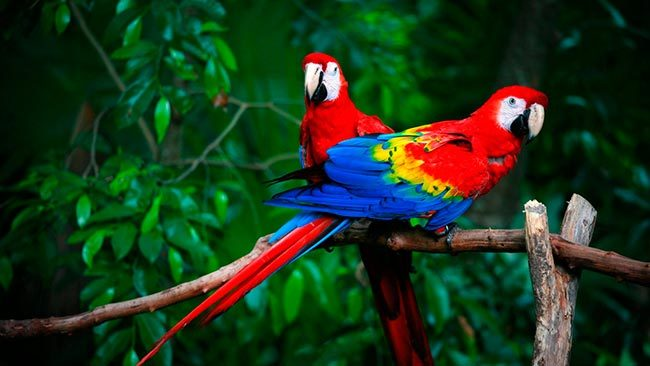
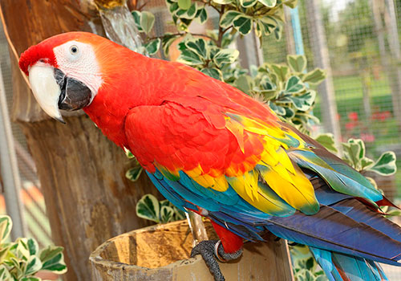
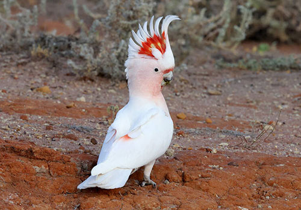

Великі папуги (ара, какаду, жако, амазони) — це високоінтелектуальні, яскраві птахи розміром від 30 до 100 см, які потребують великих воль'єрів, складної соціалізації та уваги. Вони здатні імітувати мову, жити понад 50 років, але вимагають ретельного догляду, правильного харчування та активного спілкування.
Великі папуги — чи варто заводити вдома розумника з характером?



Зміст
- Види великих папуг
- Особливості утримання великих папуг (плюси та мінуси)
- Птах-довгожитель
- Папуги — справжні інтелектуали
Види великих папуг:
- Ара
- Какаду
- Жако (Африканський сірий)
- Амазон
Ара
- Зовнішній вигляд Ара Макао:
- Голова: Яскраво-червона з ділянками білого кольору навколо клюва.
- Крила: Верхня частина — жовта, кінчики — сині.
- Хвіст: Довгий і червоний, з синіми закінченнями пір'їн.
Скільки років папугу за людськими мірками
Новонароджені пташенята розвиваються швидше, ніж діти. Після перших двох місяців молода особина є самостійною і відокремлюється від батьків. Досягнувши віку один рік, птах вже пережив линяння та зміну забарвлення, він готовий до створення сім’ї та розмноження. Вважають, що до початку першої кладки вік папуги визначається за людськими мірками, як один рік до десяти. Надалі птах вже не так активно росте, а в середині свого життя відповідає зрілій людині сорока років.